Find where your Limited deck gains and loses the most EV
A step-by-step guide, on a real draft deck. You will set the Leak Finder to show the games where you gained or lost the most win chance, open the worst one on the exact moment it turned, and then ask the same tool a bigger question: how often does a situation like that happen, and how does it change your win rate?
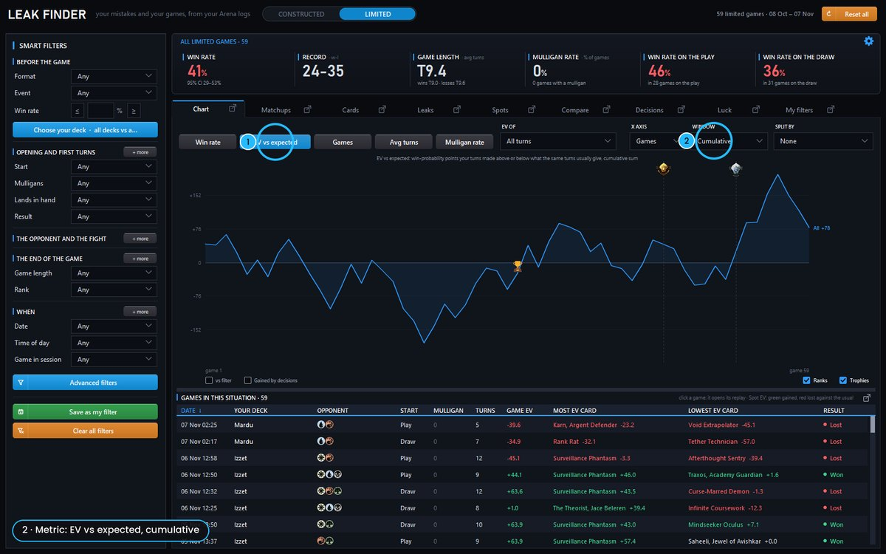
Before you start
This guide reads your games in EV, expected value: the win chance a turn, a phase or a card added or took away, compared with what the same spot usually gives in your games. If the word is new, read why the Leak Finder thinks in EV first, and expected against actual EV for the full list of what it measures. The short version: a negative number is not a mistake, it is a place worth looking at.
The screenshots below come from one Limited log of ours, 59 draft games at a 41% win rate, taken as they are. Yours will look different; the steps are the same.
1 · Switch to Limited
The pill at the top of the Leak Finder switches the whole page between CONSTRUCTED and LIMITED. Press LIMITED: the numbers, the chart and the games below now are your draft games only.
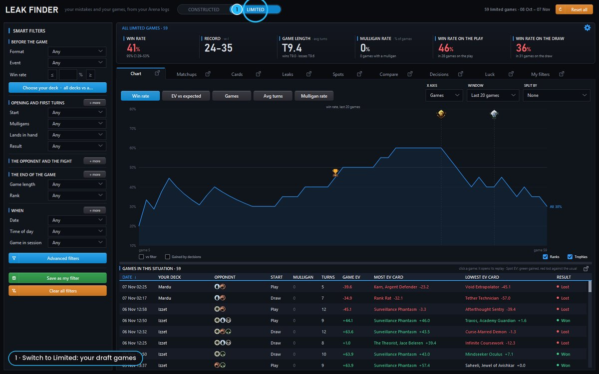
2 · Draw the chart in EV
Under the numbers, pick the EV vs expected button, and set Window to Cumulative. The chart now adds up, game after game, the win-probability points your games made above or below the usual. A line that climbs is a stretch where you gained more than the same spots usually give; a line that falls is a stretch where value slipped away.
3 · Choose whose turns you are measuring
A new menu, EV of, appears next to the metric buttons. It decides which part of each game the line adds up.
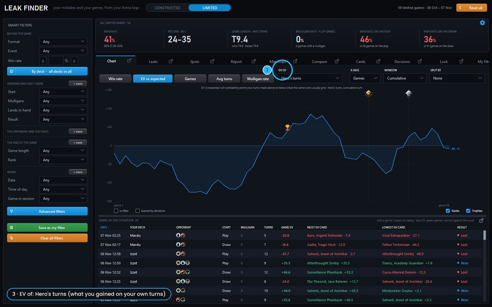
Opponent's turns is the other side of the table. Their turns can only take points from you or give some back, so this is where you read when the opponent lost EV against you: a line that climbs here means that on their turns you came out better than usual, because their play gave less than it normally does, you blocked well or your removal answered a threat in time. A line that falls means their turns cost you.
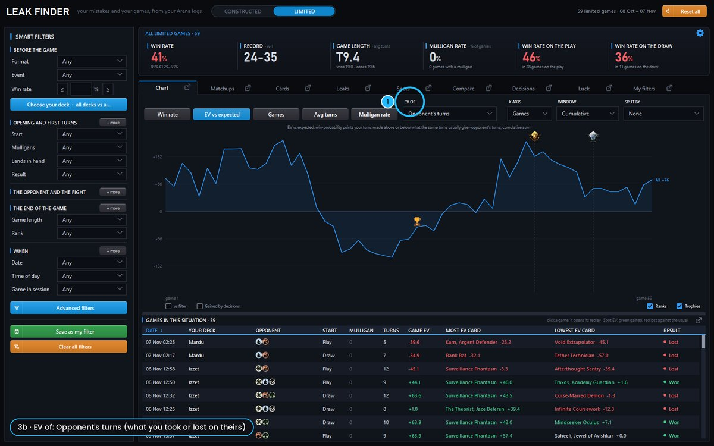
You can cut even finer. Opponent · combat (defense) adds up only their attacks, so it is the number to look at if you suspect your blocks.
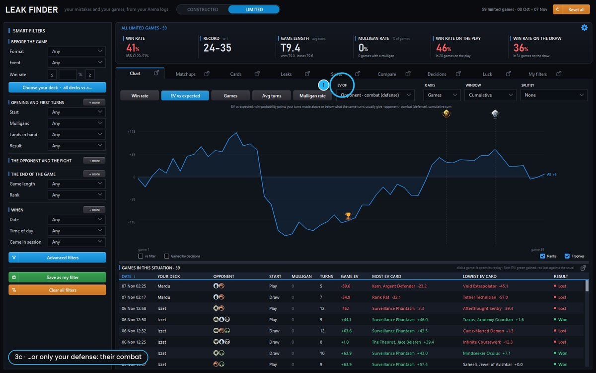
4 · Find the games where it happened
Under the chart, the table lists every game. The GAME EV column is the EV of the whole game: green when it gained, red when it lost. Click the title to sort it. Worst first:
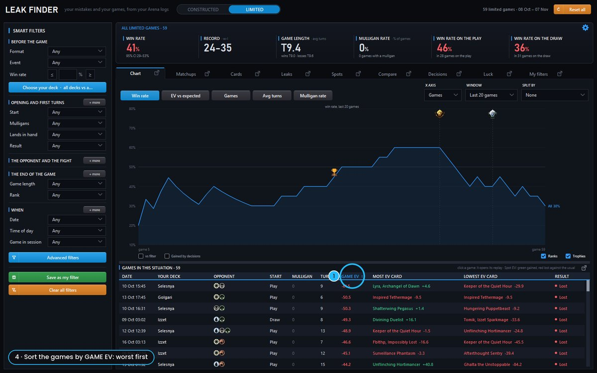
Click again for the best first. Comparing the two ends is useful by itself: what does your best game have that your worst does not?
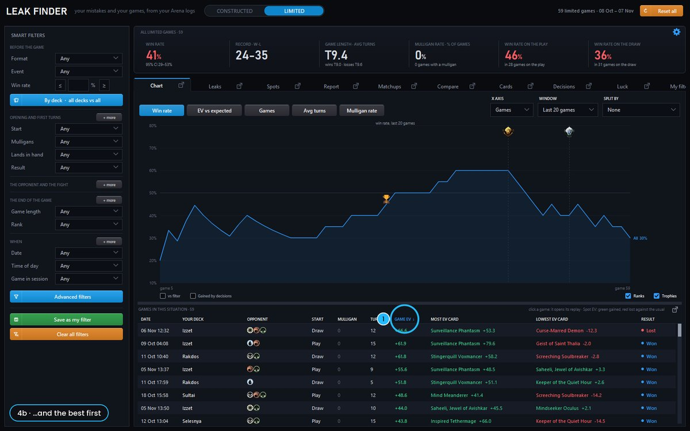
5 · Open the game on the moment that turned it
Click a row and the replayer opens on that game. The Key › button at the top jumps to the key moments: the phases that gained or lost the most EV against the usual. The story on the right says it in words, for example «12.5 win-probability points gained against the usual». Step through the actions and, at the end of every phase, the vote of that phase lists what each play was worth; under your attacks and blocks, BEST LINE and STRONG PLAYERS say what a search and strong players would have done.
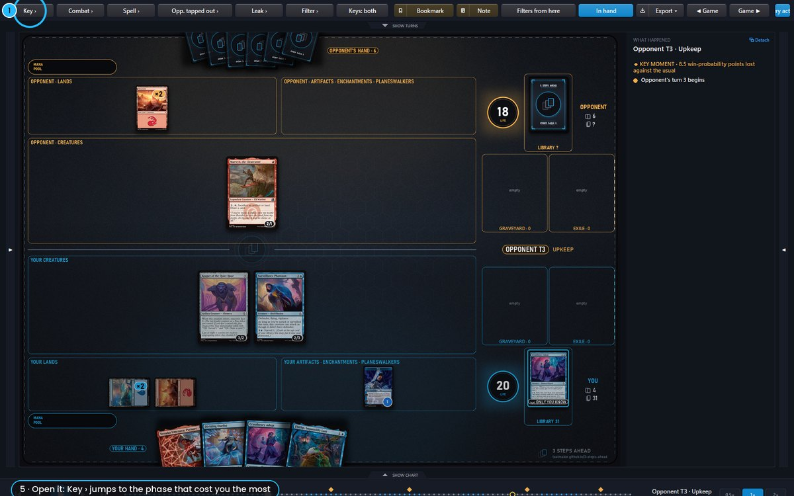
6 · Ask: has this happened before?
One game is a story. To know whether it is a pattern, you need the games that look like it. That is what Filters from here is for. Press it, with the replayer on the moment you care about, and choose how wide the search should be.
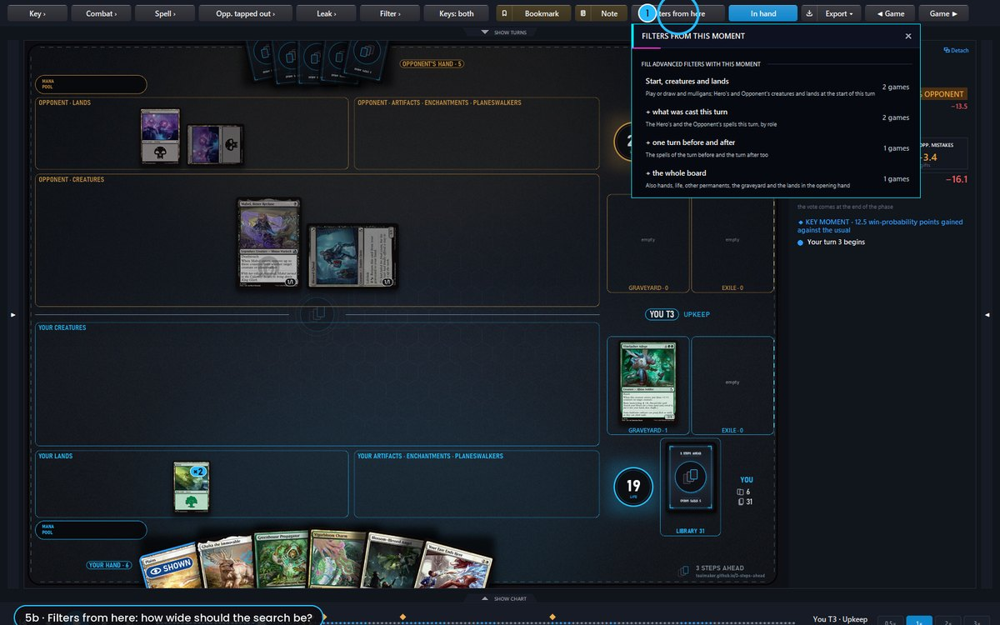
- Start, creatures and lands: play or draw, mulligans, and how many creatures and lands each side had at the start of this turn. The widest.
- + what was cast this turn: the spells of both sides in this turn, by role.
- + one turn before and after: the turn before and the turn after too.
- + the whole board: hands, life, other permanents, graveyards. Usually it finds only the game you came from.
7 · Read the question the tool wrote
Advanced filters opens with that moment written as filters, one piece each, every piece with its own x. Remove the pieces that do not matter to you and the search widens; add pieces and it narrows. Under the question, the answer: the win rate and the games behind it, how many times each piece was true, WHAT HAPPENED NEXT (how often your creatures survived the opponent's next turn, and what removed them) and EV OF THE SPOT.
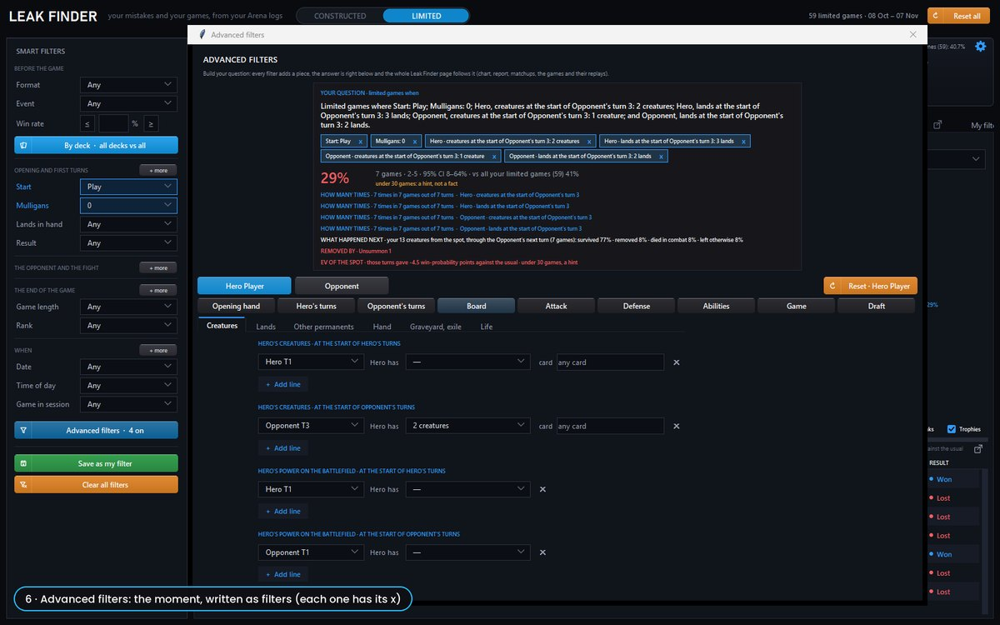
8 · Put the spot on the chart
Close the window. The whole page now follows your filters: the numbers on top, the chart, the table of games. Back on the Chart, tick vs filter under it: a blue line, This filter, is drawn next to the line of all your games. With Win rate selected you see the difference at a glance.
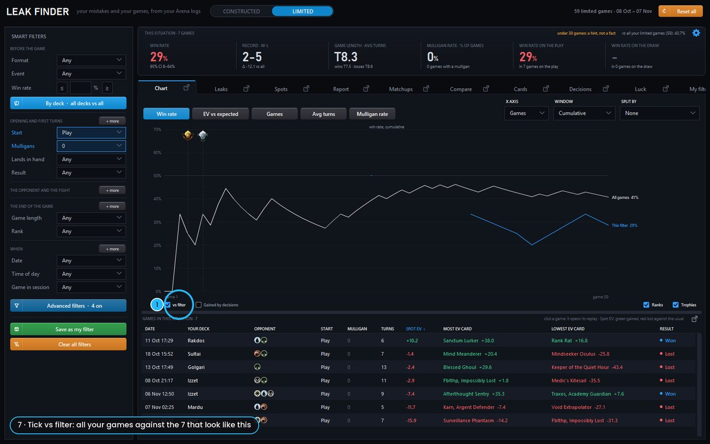
Read it with care. Two games are a hint, not a fact: the tool says it in orange (under 30 games: a hint, not a fact) and shows the 95% interval, 0 to 66%, wide enough to include the usual 41%. What it gives you is a place to keep watching. Play more, and the line either settles on the average or stays away from it.
9 · And in EV?
Switch the metric to EV vs expected with vs filter still ticked. Win rate only knows who won; EV knows how the game went, so it moves with far fewer games.
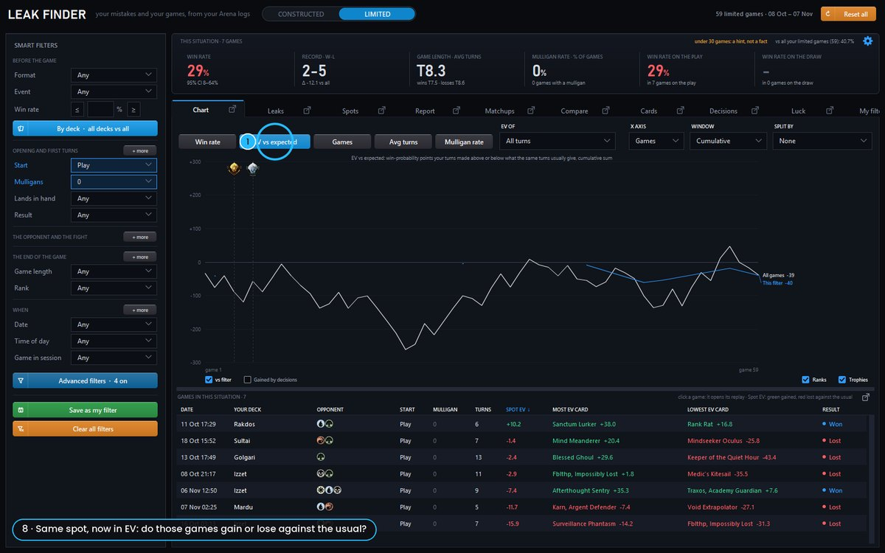
10 · Who hurt you: the opponent's cards
EV also reads the other side. In Cards, two rows look at the opponent. THEIR CARDS · EV IN PLAY FOR THE OPPONENT shows the points their turns gave them while each card was on their battlefield: the cards that hurt you most come first. THEIR CARDS · WHEN AND ON WHAT shows on which of their turns they first cast each card, and which of your cards it hit.
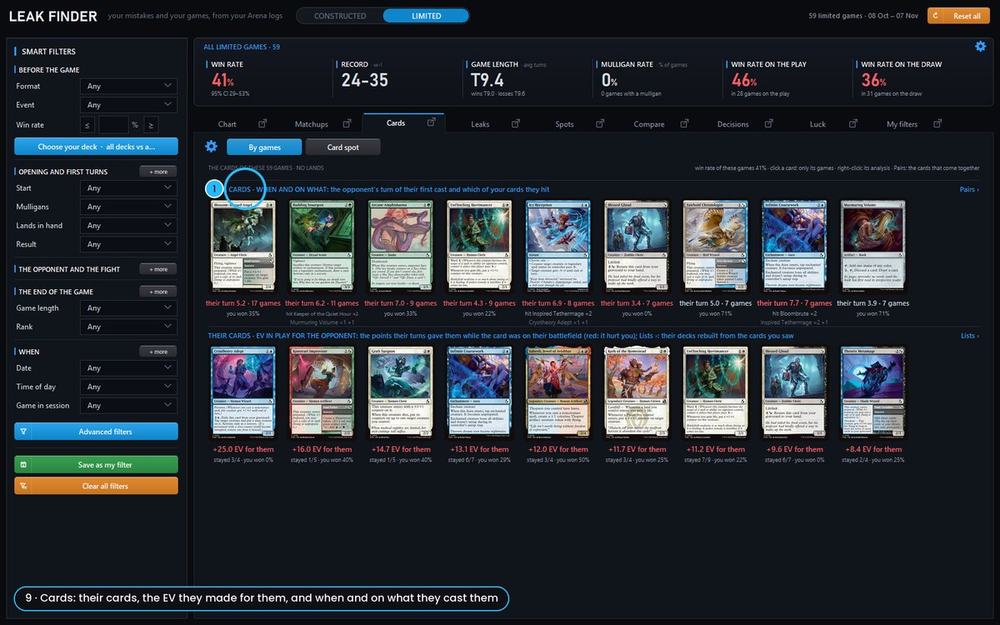
Lists › on that row rebuilds the decks you met, archetype by archetype, from the cards they showed: how often each card appeared and what it was worth to them in that deck. It only sees what reached the battlefield or was revealed, never a hand.
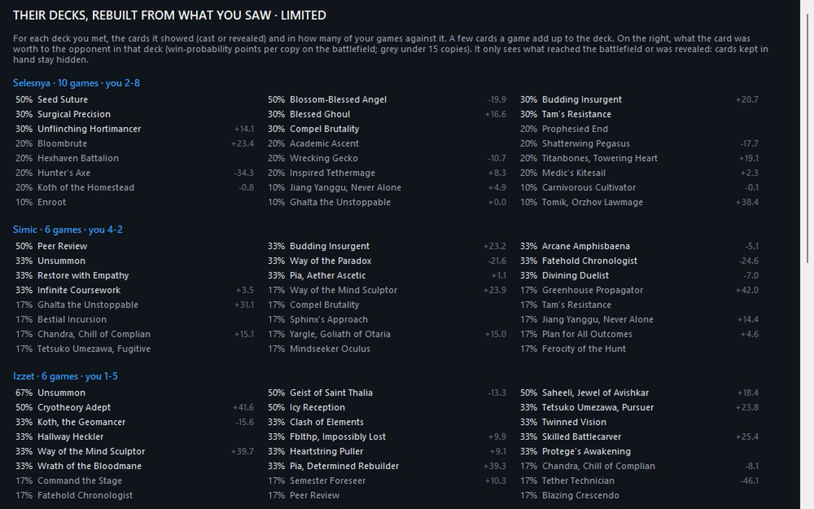
What this analysis is worth
- It finds your games without you guessing. You do not scroll fifty replays: the worst and best games are one click away.
- It separates your turns from theirs. You learn whether the value leaves on your plays or on your defense, and whether the opponent's turns are giving you points or taking them.
- It turns one game into a question. Filters from here describes the moment so you can count how often it happens, and the chart shows what it does to your win rate and to your EV.
- It shows the other side too. Their cards, when they come down and what they hit, and the decks they belong to.
- It tells you how sure it is. Few games, a hint; more games, a fact. The page says so on every number.
When a spot looks worth following, press Save as my filter in the left column to keep it, and check it again after your next draft.